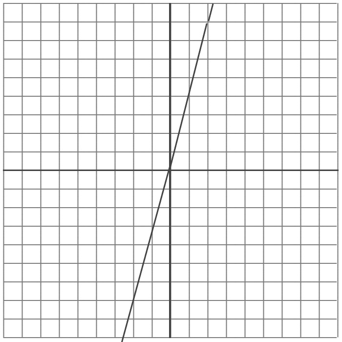

A limit in calculus describes a specific value (y) that a function approches when it's input (x) approches it. Limits are shown as...
Limits are shown in mathematics that some functions that approach a certain value tend to get closer and closer to L or limiting value, the output of the limit. But see what happens when the value "1" is plugged into this function...
When 2 is the input of the function, the limiting value becomes undefined. So let's do something that is close to 2 but isn’t exactly 2…
When g = 1.9, the function outputs 8.78, which can be rounded to 9. In a limit, no matter how many digits the variable approaching a certain number has without exactly being that number, it will get close to L but not exactly L…
On a graph, this limit would show up like this…

If you look at when x = 2, the line cuts off, leaving an empty space. This happened because we don’t really know the value of x when it equals 2 because the function itself outputs 0 over 0. But when applied in real life, this logic wouldn’t make any sense, a slope suddenly cuts off and magically there is nothing there. This is where we would go above 2 (going from the opposite side) and try to get as close to 2…
As we keep adding more zeros, the closer the quotient gets to 2. This means that when x is smaller or bigger than 1, the result will always be close to 2 but not exactly 2 which is okay.
The limiting value is the number that is equal to the limit like…
To find the limiting value, solve the function first…
Now substitute r as 3…
The limiting value is 5. You can also directly substitute r as 3…
We get the same answer from this.